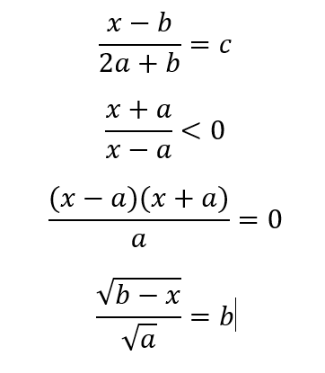

Algorytmy i struktury danych (wykłady, semester 1)
Prowadzący: dr inż. Mścisław Śrutek
Wykładowca
Wykładowcą jest Mścisław Śrutek (Prodziekan ds. Kształcenia i Spraw Studenckich naszego wydziału)
Sposób zaliczenia
- Będą do napisania dwa algorytmy – nie da się zdać bez ich wykonania
- Mogą być w nich błędy, no ale ogólnie to trzeba będzie obydwa chociaż zacząć
- Trzeba będzie je zapisać schematem blokowym bądź listą kroków
Przykładowe pytania na zaliczenie
- Co to jest algorytm?
- W jaki sposób można zapisać algorytm?
-
Napisz słownie algorytm na wyznaczenie wyniku (jakiegoś równania lub nierówności).
Narysuj schemat blokowy tego algorytmu.
 -
Oblicz i narysuj przykład (funkcje zapisu i odczytu) dla struktury danych...
- tablica 1-wymiarowa
- macierz (tablica wielowymiarowa)
- stos
- kolejka
- lista
- drzewo binarne
- kopiec/stóg/sterta
- rekord/struktura
- Porównaj stos i stertę.
Napisz, czym się różni lista od drzewa binarnego. - Jakie elementy algorytmu oceniamy (jaki algorytm będzie idealny).
- Jakie mogą być koszty algorytmu
- Opisz sortowanie przez zamianę
- Opisz quicksort/Shellsort
- Co to jest graf (jakie ma parametry i co oznaczają: stopień grafu, długość ścieżki)
- Jakie są metody zapisywania grafów
- Metody przeszukiwania grafów
- Czym jest algorytm Dijkstry, pokazać jak go użyć
- Czym się różni ścieżka Hamiltona od ścieżki Eulera
- Czym się różni ścieżka Eulera od cyklu Eulera
{kind=link}